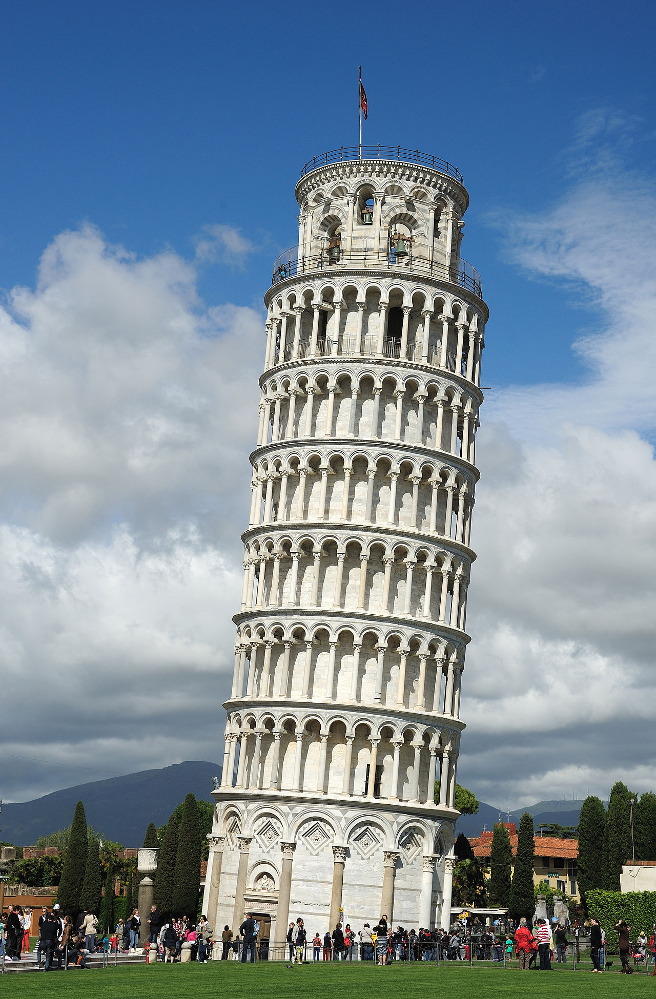

Instructor Notes - Lookin' up the truth (The Galileo Affair)
Preparation
Required
- Read Chapter 2 of The Workshop and the World by Robert P. Crease - Galileo Galilei and the Authority of Science (pp. 48-68). [50 min].
Optional
- Read Avoiding Myths and Muddles, Ch 1 Introduction of On Trial For Reason: Science, Religion, and Culture in the Galileo Affair by Maurice A. Finocchiaro. [Readings]

The Leaning Tower of Pisa. Why is this picture here, i.e., directly after the Finocchiaro reading? Photo credit: Saffron Blaze, via http://www.mackenzie.co
Lecture and Discussion
Value Spheres
In Lecture 4 Religious Authority in a Differentiated World, Reed introduced the concept of value spheres, each with its own logic and morality. Over the decades, these value spheres are perhaps competing with one another, in the process of differentiating, or partially merging. Possible examples of such spheres are listed below as (domain : value) pairs.
Law : Justice
Art: Beauty
Family : Loyalty
Religion : [value?]
Economy : [value?]
Politics : [value?]
Science : [value?]
What are the core values for the domains religion, economy, science, and politics? Discuss.
Reed mentioned that the value spheres of art, politics, and religion were less differentiated in pre-modern society than they are today? Discuss.
He also remarked that today, in America, the value spheres of politics and religion seem to be - if not overlapping more than in previous decades - somehow correlated or heading off in their own direction. Discuss.
The state has a monopoly on the legal use of force
Max Weber wrote in Politics as a Vocation (1919) that a fundamental characteristic of statehood is the claim of a monopoly on violence or monopoly on the legal use of force. The state, as the only entity that may legitimately use force, is the supreme authority within a geographical area.
I will be speaking of politics only in the sense of leading, or attempt to influence the leadership of, a political grouping, which today means: a modern state. … What is a “state”? … The modern state cannot be defined by its aims [and actions], but rather, sociologically speaking, only by the specific means of action that it … has recourse to: physical violence. …
Violence is, of course, not the state’s only or even normal means of action—I intend to say nothing of the kind. But violence is what is specific to the state. And the relationship between violence and the state is particularly close at present. In the past, it was perfectly normal for all sorts of different groups, starting with family clans, to make use of physical violence. Today, in contrast, we would have to say that the state is the only human community that (successfully) claims a monopoly on legitimate physical violence for itself, within a certain geographical territory (this territorial aspect is a defining feature). All other groups and individuals are granted the right to use physical violence only insofar as the state allows it—that is what characterizes our current system.
Max Weber, Charisma and Disenchantment: The Vocation Lectures. Edited by Paul Reitter and Chad Wellmon. Translated from the German by Damion Searls. New York Review of Books.
What is the difference between a State and a Nation? Discuss.
I render infinite thanks to God for being so kind as to make me alone the first observer of marvels kept hidden in obscurity for all previous centuries.
Galileo Galilei
Overlapping spheres of spiritual and political authority
In Europe during Galileo’s time, two main sources of authority governed human life. Spiritual authority, having to do with matters relating to the soul, was claimed by the Church. Its authority stemmed from the belief that Church leaders had authentic insight into moral matters due to their special relation to the divine order. Secular authority, having to do with nonreligious issues, was claimed by the state. Its authority stemmed from the acknowledgement that the role of the state’s rulers is to regulate these matters, and that citizens have an obligation to obey. Galileo argued that a third kind of authority existed – scientific authority. (Crease, p. 49)
Until shortly before Galileo’s birth, [the Catholic Church’s] religious authority had extended throughout Europe, but the Protestant Reformation had caused the Church to lose authority in parts of the north. In Italy, though, the Reformation inspired the Church to regroup and reinvigorate. A series of meetings called the Council of Trent launched what is known as the Counter-Reformation. Its objectives included reasserting Church authority over the interpretation of the Bible, rejecting the claim made by the Protestant reformers that interpreting the Bible was a personal matter. (p. 50)
But spiritual authority and political authority were difficult to distinguish during Galileos time. Thinking as Max Weber suggested in the The Vocation Lectures, the Catholic Church was a human community that (perhaps wrongly, but successfully) made use of "legitimate" physical violence to serve its ends. The Church was a political authority as well as a spiritual authority, because the Church was granted the right by the State to use physical violence.
The "two books" again
The telescope was the real threat to the Church authorities, not because the discoveries ran counter to moral doctrines, but because it showed that these authorities did not know what they were talking about. (Crease, p. 60)
I fully accept the authority of the Bible, Galileo continued. But those who reject my findings or think that they conflict with scripture do not understand either the findings or the Bible. The Bible is written for ordinary people, not scholars, and it’s about morals, not nature’s details. … As a theologian friend of Galileo liked to say, the point of the Bible is “to teach us how one goes to heaven, not how heaven goes!” (p. 61)
The bottom line, Galileo concluded, is that God wrote two books, the Bible and nature itself. To understand the first, we go to religious authorities, while to understand the second, we have to “read” it; that is, we must study [nature] ourselves. These two books cannot contradict each other, for the have the same divine author. If they seem to contradict each other, then we are misreading one or the other. (p. 62)
Both Bacon and Galileo speak of two books, the Bible and nature. How are their conceptions of two books, and the motivations for making this point, similar or different for these two men? Discuss.
Galileo's defense of scientific authority introduced two vulnerabilities
[Science deniers] are not motived by a single religious system but by an array of motives – greed, fear, bias, convenience, or profits, among other reasons – to which they cling with various amounts of sincerity and cynicism. Still, Galileo’s general strategy – to accept right away the fundamental values of one’s opponents – is instructive. (p. 62)
Galileo’s greatest contribution to humanity did not involve telescopes, pendulums, or mathematics. His most revolutionary act was to help usher in a way of looking at the world in which we can look at the heavens with telescopes, think of its chandeliers and swings as pendulums, and read its book in the language of mathematics. … Galileo’s defense of the authority of those who understood this world was brilliant, but it inadvertently exposed two potential vulnerabilities.
The first vulnerability was the gap between the scientific world and the world of ordinary human affairs. … [T]he experts who ran Bacon’s Bensalem would have to think differently from the citizens on the rest of the island – they would speak another language. … The rupture between these two ways of thinking was the dawn of modernity. That gap has since widened and grown larger in size and consequence.
The second vulnerability is that science can never be complete. … Part of the strength of science is its perpetual openness to revision, but that feature seems to give legitimacy to claims … that “the jury is still out” on important issues such as climate change. (Crease, p. 68)
Further Reading
Merton, R. K. (1973). The sociology of science: Theoretical and empirical investigations. University of Chicago press. (p. 267-278)
Max Weber, Charisma and Disenchantment: The Vocation Lectures. Edited by Paul Reitter and Chad Wellmon. Translated from the German by Damion Searls. New York Review of Books. (p. 45-53)
Notes
The quote at the top of the page is from p. 55 of Crease. Ref. 7 on page 290 attributes the quote to Sidereus Nuncius, or The Sidereal Messenger, tr. Albert Van Helden (Chicago: University of Chicago Press, 1989).
Sidereal means “of or with respect to the fixed stars.” :-)